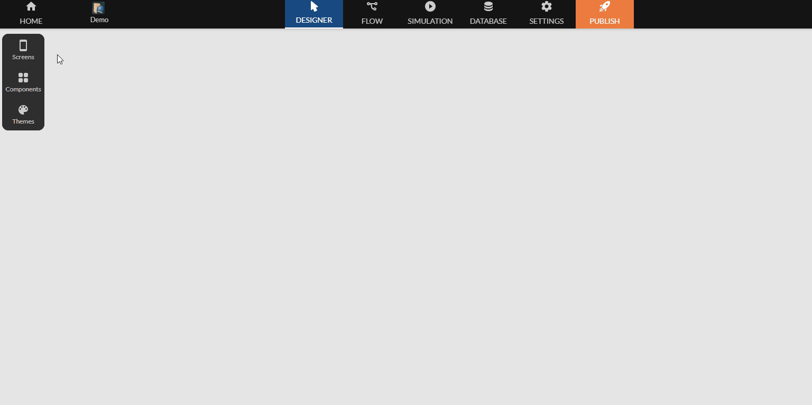
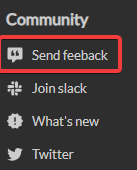

Qu'est ce que Zyllio ?
Zyllio est une solution complète All-in-One qui donne la possibilité de créer des applications mobiles professionnelles quelque soit le domaine dans lequel vous évoluez. De la conception du schémas de données, la mise en place d'un design unique, la création d'interactions dynamiques et de l'utilisation de différentes plateformes compatibles, jusqu'à la publication, Zyllio vous accompagne grâce à son interface intuitive, ses fonctionnalités innovantes et une équipe toujours prêt à vous servir. Envie de maîtriser cet outil ? Suivez le guide !
Vue d'ensemble
Zyllio propose un studio complet, composé de différentes "chambres" qui vous permettront d'avoir un flow logique et fluide, de la mise en place d'un design personnalisé, à l'intégration de données externes ou directement depuis la gestion de base données intégrée.

Vous avez trouvé un bug ?
Zyllio évolue en permanence, et comme tous, nous pouvons passer à côté de certains bugs. Si vous voulez nous faire part d'un problème, ou d'un dysfonctionnement, vous pouvez le faire à partir de votre tableau de bord, dans la rubrique Community. Vous nous aiderez ainsi à améliorer notre produits constamment, vos feedbacks sont d'une très grande valeur pour nous ! Ils seront tous lus !

Contact
Vous pouvez nous contacter sur nos réseaux sociaux, et notre Slack.